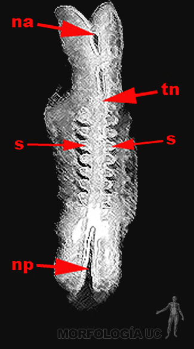
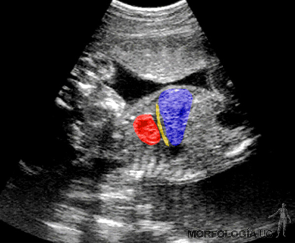
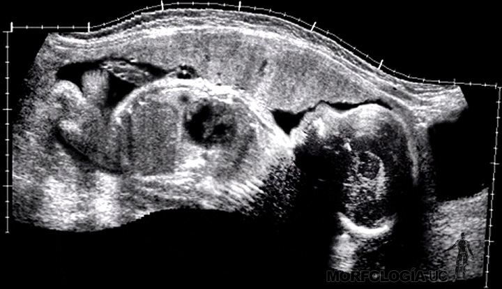

-
Fig. 2-1: Esquema modificado de Carlson, B.M., que muestra una sección de la pared del túbulo seminífero.
- 1= espermatogonia;
- 2= espermatocito primario;
- 3= espermatocito secundario;
- 4= espermatozoides;
- 5= espermatides;
- 6= células sustentaculares (de Sertoli);
- 7= pared de túbulo;
- 8= barrera Hematotesticular.
-
Fig. 2-2A:Esquema de un corte de ovario de mujer fértil.
- 1= antro folicular;
- 2= ovocito;
- 3= teca folicular;
- 4= cuerpo albicans;
- 5= cuerpo lúteo;
- 6= teca interna;
- 7= teca externa;
- 8= folículos primarios;
- 9= folículo secundario inicial.
-
Fig. 2-2B: Esquema de un ovocito secundario eclosionado.
Zona roja= acrosoma del espermatozoide.
- 1= núcleo del ovocito secundario;
- 2= citoplasma del ovocito secundario;
- 3= zona pelucida;
- 4= célula de la corona radiada.
-
Fig. 2-3A: Esquema del proceso de fecundación.
Zona roja= reacción acrosómica.
- 1= núcleo del ovocito;
- 2= citoplasma del ovocito;
- 3= zona pelucida;
- 4= reacción acrosómica;
- 5= cabeza del espermatozoide;
- 6= célula de la corona radiada.
-
Fig. 2-3B: Esquema del proceso de fecundación.
- 1= reacción de zona;
- 2= espacio perivitelino;
- 3= fusión de las membranas celulares;
- 4= célula de la corona radiada;
- 5= citoplasma del ovocito;
- 6= núcleo del ovocito secundario.
-
Fig. 2-3C: Esquema del proceso de fecundación.
- 1= pronúcleo masculino;
- 2= pronúcleo femenino;
- 3= huso mitótico de la primera división de segmentación;
- 4= cuerpos polares;
- 5= espacio perivitelino;
- 6= zona pelucida;
- 7= célula de la corona radiada.
-
Fig. 2-4: Esquema modificado de Sadler, T.W., que muestra el proceso de segmentación.
- 1= cigoto con 2 blastómeras;
- 2= cigoto con 4 blastómeras;
- 3= mórula inicial;
- 4= mórula compactada;
- 5= blastocito inicial;
- 6= ovario;
- 7= miometrio;
- 8= zona pelúcida;
- 9= trofoblasto;
- 10= embrioblasto.
-
Fig. 2-5: Esquema que muestra las fases del ciclo endometrial.
Curva azul= niveles de estrogenos.
Curva verde= progesterona.
- 1= ovulación;
- 2= fase proliferativa del endometrio;
- 3= fase secretora del endometrio;
- 4= fase menstrual.
-
Fig. 2-6A: Esquema modificado de Carlson, B.M., que muestra el proceso de implantación.
- 1= blastocele;
- 2= hipoblasto;
- 3= epiblasto;
- 4= citotrofoblasto;
- 5= sincitotrofoblasto;
- 6= epitelio endometrial;
- 7= glándulas endometriales;
- 8= vasos endometriales.
-
Fig. 2-6B: Esquema modificado de Carlson, B.M., que muestra el proceso de implantación.
- 1= cavidad amniótica;
- 2= saco vitelino primario;
- 3= membrana de Heuser;
- 4= citotrofoblasto;
- 5= mesodermo extraembrionario;
- 6= epitelio endometrial;
- 7= hipoblasto;
- 8= epiblasto;
- 9= amnios;
- 10= glándulas endometriales;
- 11= vasos endometriales.
-
Fig. 2-6C: Esquema de un blastocito.
- ca= cavidad amniótica;
- de= disco embrionario;
- bc= blastocele;
- t= trofoblasto.
-
Fig. 2-7A: Esquema de un embrión bilaminar.
- t= trofoblasto;
- m= membrana de Heuser;
- svp= saco vitelino primario;
- h= hipoblasto;
- e= epiblasto;
- ca= cavidad amniótica;
- a= amnios;
- mee= mesodermo extraembrionario.
-
Fig. 2-7B: Esquema de un embrión trilaminar.
- 1= mesodermo extraembrionario que cubre al trofoblasto (t), y juntos forman el corion;
- 2= esplacnopleura;
- 3= somatopleura que cubre al amnios;
- ca= cavidad amniótica;
- svs= saco vitelino secundario;
- cee= celoma extraembrionario;
- pf= pedículo de fijación;
- vc= vellosidad coriónica.
-
Fig. 2-8A: Esquema modificado de Sadler, T.W., que muestra el proceso de gastrulación visto desde el aspecto dorsal del embrión.
- 1= membrana bucofaríngea;
- 2= membrana cloacal;
- 3= línea primitiva;
- 4= nudo primitivo;
- 5= fosa primitiva.
-
Fig. 2-8B: Esquema modificado de Sadler, T.W., que muestra el proceso de formación de la notocorda en un corte longitudinal de un embrión.
- 1= nudo (nódulo) primitivo;
- 2= fosa primitiva;
- 3= proceso notocordal;
- 4= membrana bucofaríngea;
- 5= membrana cloacal;
- 6= alantoides;
- 7= endodermo;
- 8= esplacnopleura;
- 9= amnios;
- 10= somatopleura;
- pf= pedículo de fijación.
-
Fig. 2-9: Esquema modificado de Sadler, T.W., que muestra el proceso de gastrulación en un corte transversal de un embrión.
- 1= fosa primitiva;
- 2= línea primitiva;
- 3= epiblasto;
- 4= amnioblastos
- 5= hipoblasto;
- 6= célula endodérmica;
- 7= célula mesodérmica en migración.
-
Fig. 2-10A: Esquema modificado de Sadler, T.W., que muestra un corte transversal de un embrión trilaminar.
- 1= ectodermo;
- 2= mesodermo intraembrionario;
- 3= endodermo;
- 4= esplacnopleura;
- 5= somatopleura;
- 6= amnios;
- PN= placa neural (neuroectodermo);
- NT= notocorda.
-
Fig. 2-10B: Esquema modificado de Sadler, T.W., que muestra el desarrollo del mesodermo en un corte transversal de un embrión.
Cabeza de flecha verde= surco neural.
- 1= notocorda;
- 2= mesodermo paraaxial;
- 3= mesodermo intermedio;
- 4= mesodermo lateral;
- 5= amnios;
- 6= somatopleura;
- 7= endodermo;
- 8= esplacnopleura;
- ca= cavidad amniótica;
- svs= saco vitelino secundario.
-
Fig. 2-11: Esquema modificado de Sadler, T.W., que muestra el desarrollo del mesodermo y del celoma intraembrionario en un corte transversal de un embrión.
- 1= somito;
- 2= tubo neural;
- 3= celoma intraembrionario;
- 4= mesodermo intermedio;
- 5= celoma extraembrionario;
- 6= notocorda;
- 7= amnios;
- 8= somatopleura;
- 9= esplacnopleura;
- 10= endodermo;
- 11= hoja esplácnica o visceral del mesodermo intraembrionario;
- 12= hoja somática o parietal del mesodermo intraembrionario, (11 y 12 delimitan el espacio 3);
- ca= cavidad amniótica;
- svs= saco vitelino secundario.
-
Fig. 2-12: Esquema modificado de Carlson, B.M., que muestra el desarrollo de las vellosidades coriónicas durante las tres primeras semanas.
- 1= vellosidad primaria (cito+sincitiotrofoblasto);
- 2= vellosidad secundaria (cito+sincitiotrofoblasto+mesodermo);
- 3= vellosidades terciarias (cito+sincitiotrofoblasto+mesodermo+vasos sanguíneos);
- 4= vasos embrionarios;
- 5= vasos maternos;
- 6= laguna trofoblástica.
-
Fig. 2-13: Fotografía de un embrión somítico temprano. En la especie humana el número de pares de somitos permite determinar la edad del embrión.
Flechas rojas= somitos.
- vc= vesícula cerebral;
- n= neuroporo posterior.
-
Fig. 2-14: Esquema modificado de Sadler, T.W., que muestra el proceso de neurulación.
- 1= ectodermo;
- 2= cresta neural;
- 3= pliegue neural;
- 4= notocorda;
- 5= mesodermo;
- 6= ganglio de raíz dorsal de un nervio raquídeo;
- sn= surco neural;
- TN= tubo neural.
-

Fig. 2-15: Esquema modificado de Moore, K.L. Persaud, T.V.N., que muestra el aspecto dorsal de un embrión somítico temprano.
- na= neuroporo anterior;
- np= neuroporo posterior;
- tn= tubo neural;
- s= somitos cervicales.
-
Fig. 2-16A: Esquema modificado de Sadler, T.W., que muestra en un corte el desarrollo del plegamiento longitudinal del embrión.
Flechas rojas= señalan el desarrollo de las curvaturas cefálica y caudal, con el subsecuente desplazamiento del corazón y del pedículo de fijación hacia el aspecto ventral del embrión.
Azul= ectodermo.
Verde= mesodermo.
Amarillo= endodermo.
- ia= intestino anterior;
- im= intestino medio;
- ip= intestino posterior;
- com= conducto onfalo mesentérico;
- svs= saco vitelino secundario;
- co= corazón;
- pf= pedículo de fijación;
- a= alantoides.
-
Fig. 2-16B: Esquema modificado de Sadler, T.W., que muestra en un corte el desarrollo del plegamiento longitudinal del embrión, en un estadío más avanzado que el la figura 2-16A.
Se observa la posición ventral del corazón y del pedículo de fijación; además, se aprecia la reducción del saco vitelino secundario y del conducto onfalo mesentérico.
Flechas rojas= señalan el desarrollo de las curvaturas cefálica y caudal.
Azul= ectodermo.
Verde= mesodermo.
Amarillo= endodermo.
* = Los asteriscos marcan la posición de la membrana bucofaríngea y de la membrana cloacal.
- ia= intestino anterior;
- im= intestino medio;
- ip= intestino posterior;
- com= conducto onfalo mesentérico;
- svs= saco vitelino secundario;
- pf= pedículo de fijación;
- a= alantoides.
-
Fig. 2-16C: Esquema modificado de Sadler, T.W., que muestra en un corte, el desarrollo del plegamiento lateral del embrión.
Flechas rojas= señalan el desarrollo de la curvatura lateral.
- tu= tubo neural;
- i= intestino medio;
- co= conducto ónfalo mesentérico;
- svs= saco vitelino secundario;
- cie= celoma intraembrionario.
-
Fig. 2-17: Esquema modificado de Sadler, T.W., que muestra el aspecto lateral de un embrión somítico tardío.
- 1= placoda auditiva;
- 2= placoda óptica;
- 3= hendidura faríngea;
- av= arco visceral;
- m= esbozo del miembro superior;
- s= somito;
- cu= cordón umbilical;
- svs= saco vitelino secundario.
-
Fig. 2-18: Foto del aspecto palmar de la mano de un lactante, donde se observa la persistencia del membrana interdigital, sindactilia que afecta a los dedos medio y anular.
-
Fig. 2-19: Foto de la pared abdominal de un recién nacido donde se observa un onfalocele; defecto de cierre de la pared dentro del cual están contenidas las asas intestinales.
-
Fig. 2-20A: Ecografía Doppler de un feto que muestra el cordón umbilical formado por la vena umbilical en (rojo) en torno a la cual se desarrollan las arterias umbilicales, (azul) y (amarillo).
-
Fig. 2-20B: Ecografía Doppler de un feto que muestra el trayecto pélvico de las arterias umbilicales y su convergencia hacia la pared abdominal, para continuarse en el cordón umbilical.
-
Fig. 2-21A: Ecografía obstétrica de la región perineal de un feto de sexo masculino, la imagen muestra la bolsa escrotal (azul) y el pene (rojo).
-
Fig. 2-21B: Ecografía de la región abdomino-pélvica de un feto de 20 semanas, la imagen muestra el riñón (azul).
-
Fig. 2-22: Ecografía de la región cefálica de un feto de 22 semanas que muestra el perímetro craneal de forma oval. Las marcas indican los diámetros biparietal (diámetro menor) y fronto-occipital (diámetro mayor).
-

Fig. 2-23: Ecografía fetal que muestra en un corte longitudinal el corazón (rojo), el hígado (azul) y entre ambos una zona econegativa que corresponde al diafragma (verde).
-

Fig. 2-24: Ecotomografía de un feto de término que muestra en un corte longitudinal la proporción entre las distintas regiones corporales.
Observe en el tronco, lo reducido del tórax en comparación con la cavidad abdominal.
-
Fig. 2-25A: Ecografía fetal que muestra en un corte longitudinal el miembro inferior (rojo) y el miembro superior (azul).
-
Fig. 2-25B: Foto de un feto diafanizado y tratado con alizarina roja, lo que permite ver el proceso de osificación de los huesos del esqueleto axil y apendicular.
Observe la osificación de las diáfisis de los huesos largos, los arcos vertebrales y la mandíbula.
-
Fig. 2-25C: Ecotomografía de un feto de término que muestra los rasgos faciales.
Observe el aspecto rechoncho del feto, producto del depósito de grasa subcutánea.
-
Fig. 2-26: Foto de un modelo de placenta de término.
- 1= vellosidad ancla;
- 2= tabique decidual;
- 3= cámara hemática o de intercambio, donde flotan las vellosidades bañadas por la sangre materna;
- 4= vellosidades libres;
- 5= arteria endometrial;
- 6= vena endometrial;
- 7= placa citotrofoblástica;
- 8= sincitiotrofoblasto;
- 9= arterias umbilicales;
- 10= vena umbilical;
- 11= gelatina de Warton;
- 12= amnios;
- 13= lámina coriónica;
- 14= depósito (degeneración) de fibrinoide;
- 15= decidua basal.
-
Fig. 2-27: Foto de un corte transversal del cordón umbilical.
- 1= alantoides;
- A= arterias umbilicales;
- V= vena umbilical.